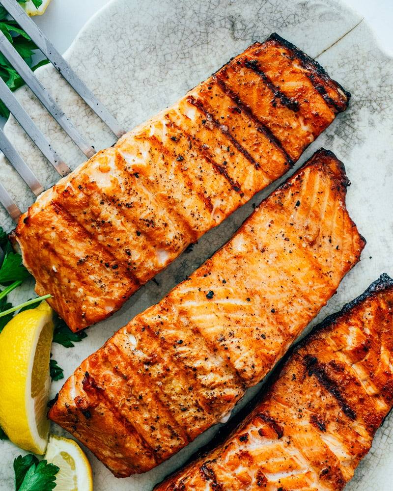

Grilled Salmon Recipe

Meet the perfect Grilled Salmon Recipe! It's an easy method and
comese out tender with a slight cripsy crust. Even better, it's sprinkled
with our tasty magical seasoning blend.
Ingredients
- Salmon Fillets
- Salt
- Olive Oil
- Seafood Seasoning
How to make Salmon Step-by-Step
- Preheat a grill to medium-high heat
(375 to 450 degrees).
- Brine the salmon (or go to Marinated
Salmon to marinade instead): While the
grill preheats, in a shallow dish mix
together 4 cups room temperature water
and 3 tablespoons kosher salt. Place the
salmon in the water and wait for 15
minutes (this should be about the time
it takes to preheat).
- Pat the salmon dry with a clean towel.
Rub it generously with oil and
sprinkle it with the kosher salt
and seasoning blend (or simply
salt and pepper).
- Grill the salmon skin side up for 3 to
5 minutes (where the flames aren’t
directly touching the fish), until
grill marks appear and it releases from
the grates. Flip and cook another 2 to
5 minutes, depending on the thickness
of the salmon, until flaky and just
pink at the thickest portion and the
internal temperature is 125 to 130
degrees. (Salmon varies in thickness,
so the cook time is different based
on each piece of fish.) Allow to
rest for a few minutes,
then serve.